Objectives
This lab 'takes a big step forward', in that we refactor the previous version (6.0) of our Case Study CoffeeMate and introduce Firebase Support via Google Authentication and a Realtime Database in version CoffeeMateFBI.1.0
Setup - Starter Code
It can be quite difficult to try and 'bolt on' Firebase to an Android App, depending on the number and type of APis being used, but we can start with a version which does include a number of the Google APis that we need, namely CoffeeMate.6.0, which you can download here - CoffeeMate.6.0.
As always, It's probably still a good idea to run the App and confirm that the app (or your 6.0 version app) is configured properly and (still) running.
You might also want to rename the app to what I will be referring to throughout the rest of the lab - CoffeeMateFBI.1.0.
On completion of this lab, you will be able to do the following:
Create/Import a new project to your Firebase Console (found here) and configure your project as required
Add Firebase Authentication (including Google Sign-In)
Add CRUD (Create Retrieve Update Delete) functionality via your Firebase Realtime Database
The following steps will help you achieve this, so before we can do anything with Firebase, let's setup our CoffeeMate Project on the Firebase Console.
The instructions on the official developer docs are as good a place to start as any, so check how to 'Add Firebase to your Project' here.
The final list of dependencies/plugins required are as below, so confirm your list against mine and add them in at this stage if you so wish?
dependencies {
compile fileTree(include: ['*.jar'], dir: 'libs')
compile project(':volley')
compile 'com.android.support:appcompat-v7:25.2.0'
compile 'com.android.support:support-v4:25.2.0'
compile 'com.android.support:design:25.2.0'
compile 'com.makeramen:roundedimageview:2.2.1'
compile 'com.android.support.constraint:constraint-layout:1.0.2'
compile 'com.google.code.gson:gson:2.7'
compile 'com.google.android.gms:play-services-auth:11.0.2'
compile 'com.google.android.gms:play-services-maps:11.0.2'
compile 'com.google.android.gms:play-services-location:11.0.2'
compile 'com.google.firebase:firebase-core:11.0.2'
compile 'com.google.firebase:firebase-auth:11.0.2'
compile 'com.google.firebase:firebase-database:11.0.2'
compile 'com.firebaseui:firebase-ui-database:1.0.0'
testCompile 'junit:junit:4.12'
}
apply plugin: 'com.google.gms.google-services'Once you have your project set up, you can continue on to the next step.
Signing In with Firebase Authentication
First of all, make sure you have your Firebase Project set up and you've added your existing CoffeeMate project to it, like so
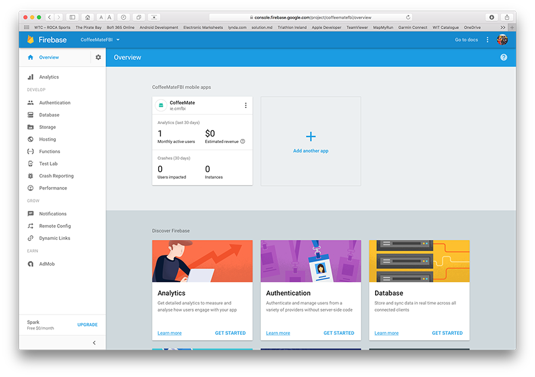
Notice I've renamed the package to ie.cmfbi - there were a few issues when I initially set up the project with the existing ie.cm package name (which you might get too) like
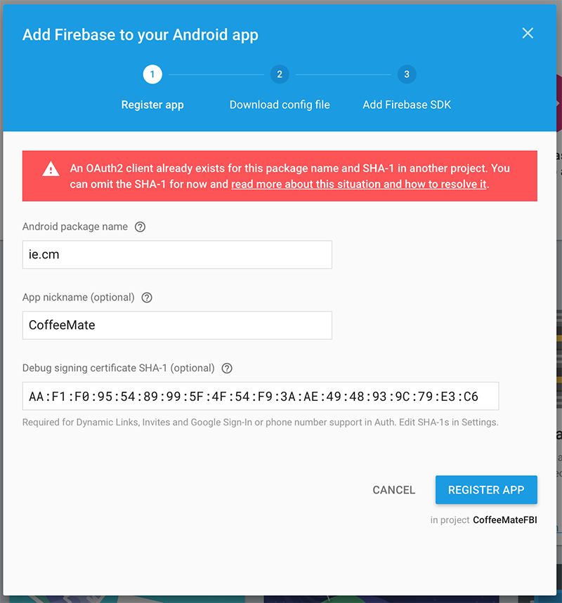
so I just decided to rename the package. If you take this approach make sure you update your Google Maps APi authorised package name and SHA-1 key on the developer console here https://console.developers.google.com
Also, you'll need an updated google-services.json file so make sure you download it during the setup process
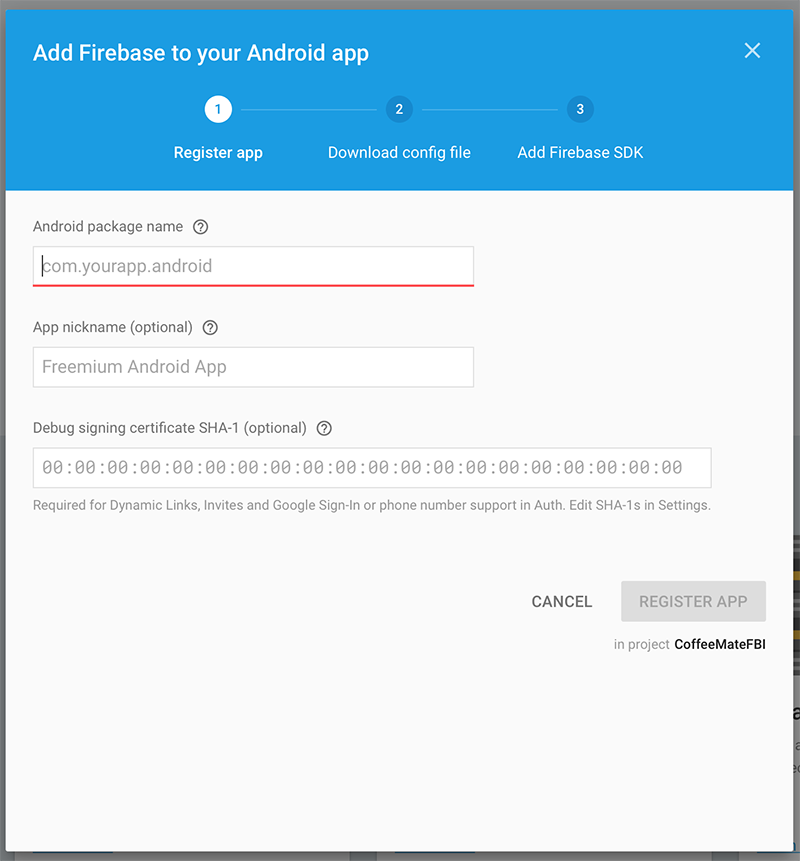
and
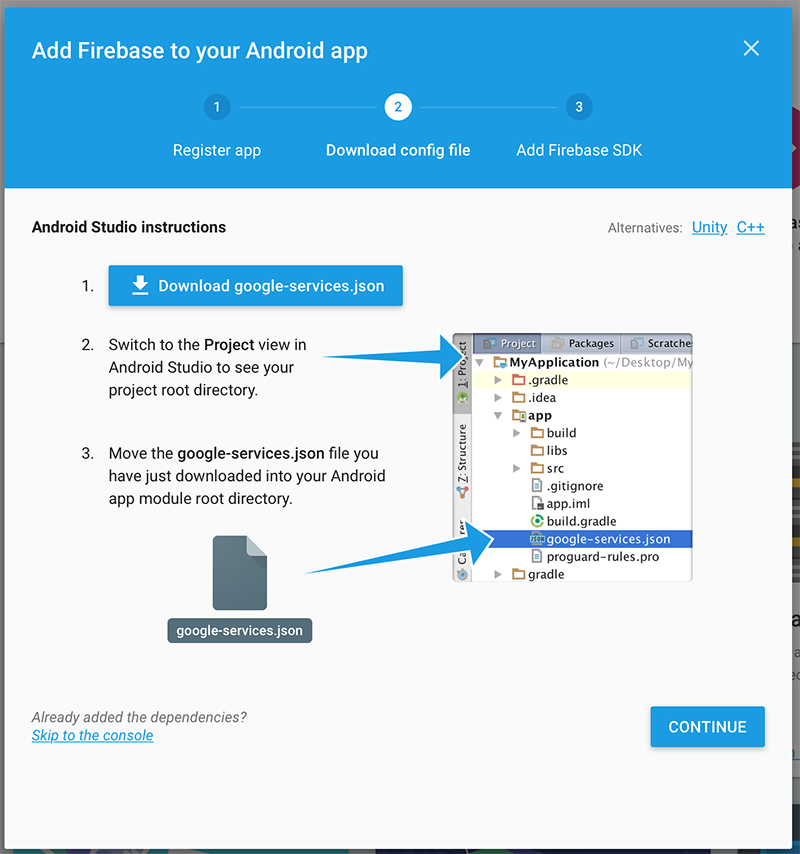
Some other useful links
https://console.cloud.google.com/home/dashboard
https://developers.google.com/mobile/add
For this Lab we'll be using Google Sign-In Authentication with Firebase, so visit your firebase console again here https://console.firebase.google.com and turn on the required Authentication.
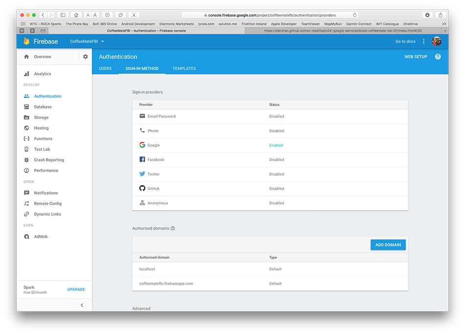
We'll be using a lot of this https://firebase.google.com/docs/auth/android/google-signin for reference on this step.
Now, open your Login.java and update your GoogleSignInOptions object to 'requestIDToken()' like so
app.mGoogleSignInOptions = new GoogleSignInOptions
.Builder(GoogleSignInOptions.DEFAULT_SIGN_IN)
.requestIdToken(getString(R.string.default_web_client_id))
.requestEmail()
.requestProfile()
.build();Next, and the following property to your CoffeeMateApp
public FirebaseAuth mFirebaseAuth;
public FirebaseUser mFirebaseUser;and bring in and/or update the following
private void firebaseAuthWithGoogle(GoogleSignInAccount acct) {
Log.v(TAG, "firebaseAuthWithGoogle:" + acct.getId());
AuthCredential credential = GoogleAuthProvider.getCredential(acct.getIdToken(), null);
app.mFirebaseAuth.signInWithCredential(credential)
.addOnCompleteListener(this, new OnCompleteListener<AuthResult>() {
@Override
public void onComplete(@NonNull Task<AuthResult> task) {
Log.v(TAG, "signInWithCredential:onComplete:" + task.isSuccessful());
validateFirebaseUser();
// If sign in fails, display a message to the user. If sign in succeeds
// the auth state listener will be notified and logic to handle the
// signed in user can be handled in the listener.
if (!task.isSuccessful()) {
Log.v(TAG, "signInWithCredential", task.getException());
Toast.makeText(Login.this, "Authentication failed.",
Toast.LENGTH_SHORT).show();
}
else
startHomeScreen();
}
});
}
private void validateFirebaseUser()
{
Log.v(TAG,"Calling validateFirebaseUser() " );
if(app.mFirebaseUser == null)
app.mFirebaseUser = FirebaseAuth.getInstance().getCurrentUser();
final String userName = app.mFirebaseUser.getDisplayName();
final String userId = app.mFirebaseUser.getUid();
final String email = app.mFirebaseUser.getEmail();
Log.v(TAG,"Validating Firebase User Details for: " + app.mFirebaseUser.getEmail());
}Add this to your onCreate()
app.mFirebaseAuth = FirebaseAuth.getInstance();and try and work out where you should be calling
firebaseAuthWithGoogle(...)Run your app and keep track of the Logs in Android Studio to verify Firebase Authentication.
If everything is configured correctly, you should now be seeing a new user on your console
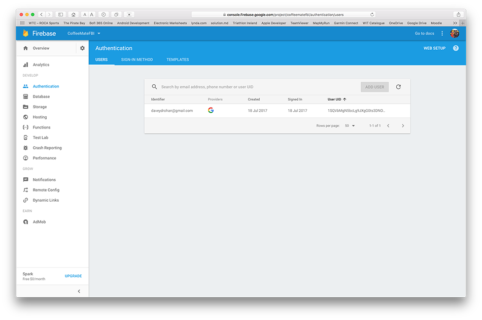
and going forward
And for completeness you should probably sign out your current user from Firebase, whenever they log out of the app using
FirebaseAuth.getInstance().signOut();
app.mFirebaseUser = null;
Log.v("coffeemate", "User Logged out of Firebase");The next step will involving Adding coffees to our Firebase Realtime database.
Firebase CRUD - Add a Coffee
Before you go any further, here's where we're at so far
and remember to retain your own google-services.json file (as this archive doesn't contain one!).
We'll be using some of this http://www.amalhichri.net/android-firebase-realtime-database-basic-cruds/ tutorial for this and subsequent steps.
So based on the above link, go ahead and add "Firebase offline Persistence", wherever you think is most appropriate.
Next, add the following to your CoffeeMateApp
public DatabaseReference mFBDatabase;Now, in order to perform any operation on the database, whether it be read or write (or update or delete), you need to get a reference to the database first. the code that follows gives you a reference to the database JSON top node (and a lot more). From here you need to use the child node names to traverse further. And to keep our code as reusable as possible, we'll introduce a few new classes to manage our Firebase database calls (similar to what we did for our SQLite calls).
First, introduce the following into your models package, so that we can associate specific users with their own coffees.
public class User {
public String userId;
public String userName;
public String userEmail;
public String userProfilePic;
public User(){
// Default constructor required for calls to DataSnapshot.getValue(User.class)
}
public User(String userId, String userName, String userEmail, String userProfilePic ){
this.userId = userId;
this.userName = userName;
this.userEmail = userEmail;
this.userProfilePic = userProfilePic;
}
}Now, create a new class called FBDBManager and for simplicity, place it in the same api package we have our VolleyApi class.
add the following properties
private static final String TAG = "coffeemate";
public DatabaseReference mFirebaseDatabase;
public String mFBUserId;and methods (for the moment)
public void open() {
//Set up local caching
FirebaseDatabase.getInstance().setPersistenceEnabled(true);
//Bind to remote Firebase Database
mFirebaseDatabase = FirebaseDatabase.getInstance().getReference();
Log.v(TAG, "Database Connected :" + mFirebaseDatabase.getKey());
}
//Check to see if the Firebase User exists in the Database
//if not, create a new User
public void checkUser(final String userid,final String username,final String email) {
mFirebaseDatabase.child("users").child(userid).addListenerForSingleValueEvent(
new ValueEventListener() {
@Override
public void onDataChange(DataSnapshot dataSnapshot) {
if(dataSnapshot.exists()){
Log.v(TAG, "User found");
}
else{
Log.v(TAG, "User not found");
User newUser = new User(userid, username, email, null);
mFirebaseDatabase.child("users").child(userid).setValue(newUser);
}
mFBUserId = userid;
Log.v(TAG, "Firebase User ID : " + mFBUserId);
}
@Override
public void onCancelled(DatabaseError databaseError) {
Log.v(TAG, "Unable to Validate Existing Firebase User: ");
}
}
);
}and see if you can make the necessary modifications to the project to
- open the database 'link' to Firebase on App Startup and
- verify the currently signed-in user against the database
If it all checks out you should see something like this
Initially, with no users
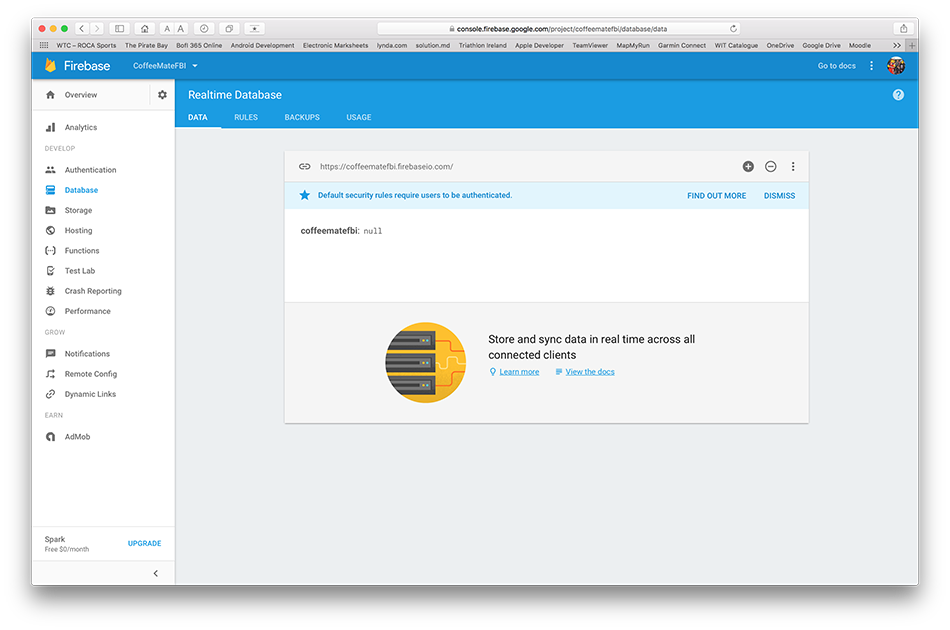
then with one new user (me :-) )
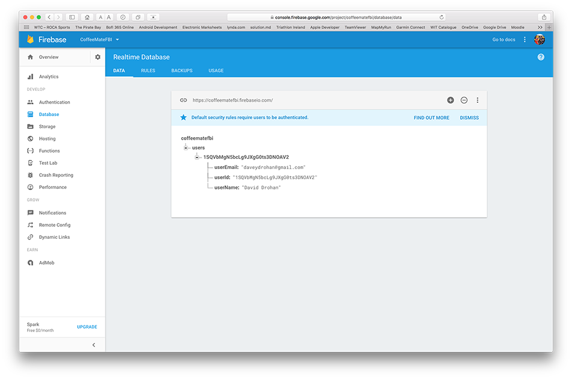
etc. etc.
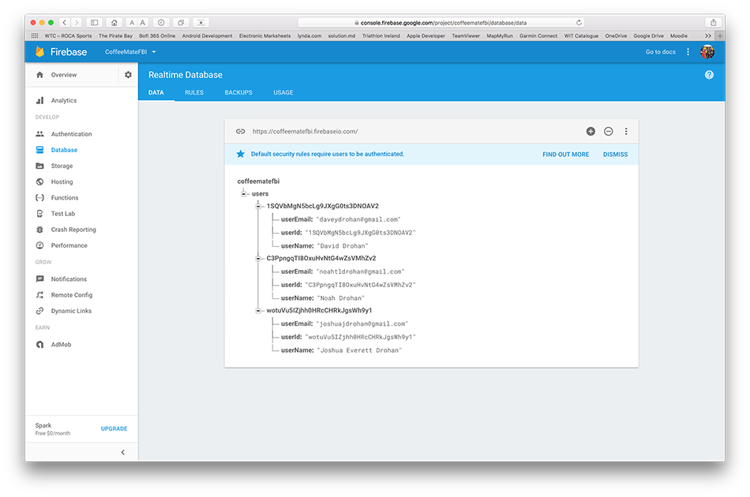
View Users Current Location - Part II
The previous step was mostly about adding in a lot of boilerplate code to our Fragment, to get things moving - a lot of which you would have seen in the lecture material that covers Location and Google Maps.
This step adds a bit more of that, but also adds some bespoke code specific to CoffeeMate and its features.
Firstly, edit your MapsFragment and add/replace the following methods
protected void startLocationUpdates() {
mLocationRequest = new LocationRequest();
mLocationRequest.setPriority(LocationRequest.PRIORITY_BALANCED_POWER_ACCURACY);
mLocationRequest.setInterval(UPDATE_INTERVAL);
mLocationRequest.setFastestInterval(FASTEST_INTERVAL);
try {
LocationServices.FusedLocationApi.requestLocationUpdates(mGoogleApiClient, mLocationRequest, this);
}
catch(SecurityException se) {
Toast.makeText(getActivity(),"Check Your Permissions on Location Updates",Toast.LENGTH_SHORT).show();
}
}
public void onLocationChanged(Location location) {
// Report to the UI that the location was updated
String msg = "Updated Location: " + Double.toString(location.getLatitude()) + "," + Double.toString(location.getLongitude());
Log.v("coffeemate", "onLocationChanged() = " + msg);
mCurrentLocation = location; initCamera(mCurrentLocation);
}And make sure you call startLocationUpdates() in your onConnected()
Now, add the following permission to your manifest file
<uses-permission android:name="android.permission.ACCESS_FINE_LOCATION"/>and run your app again (and remember to accept these new permissions).
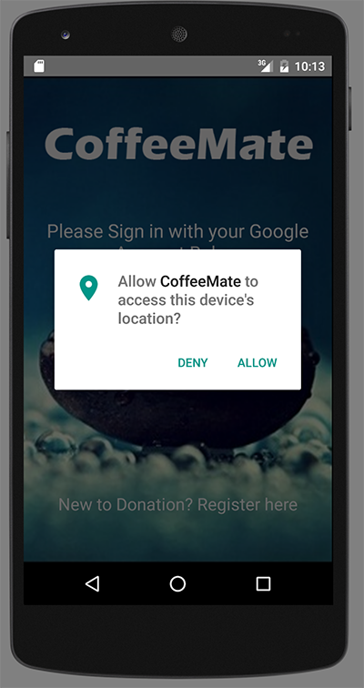
You should now see something like this when you 'View on Map'
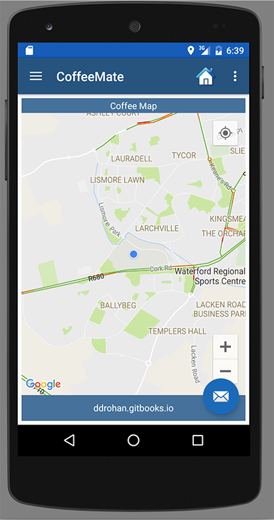
but now when you send new coordinates to the emulator, you should see the 'blue dot' move to that new location, as below

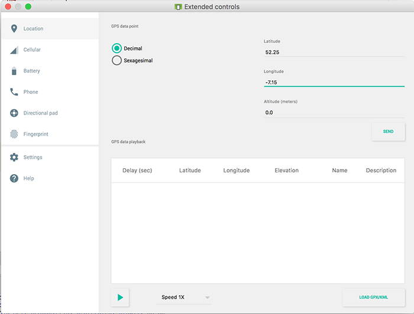
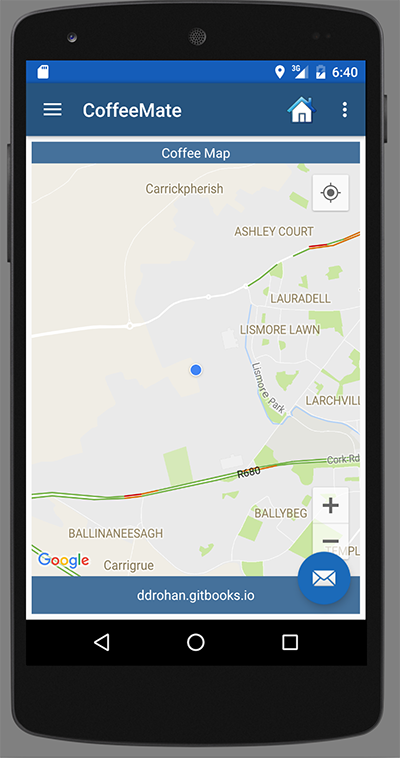
View Users Coffee Locations
The last step in this lab involves displaying the users coffees on the map, along with the users location (which was the last step) so we need to modify a few classes here, namely
- MapFragment
- AddFragment
- CoffeeApi
MapFragment
Here we need to inspect our list of coffees and (using the longitude and latitude coordinates) place a marker on the map indicating the location of each coffee.
So, first, open up your MapFragment class and add the following method
public void addCoffees(List<Coffee> list){
for(Coffee c : list)
getMap().addMarker(new MarkerOptions()
.position(new LatLng(c.marker.coords.latitude, c.marker.coords.longitude))
.title(c.name + " €" + c.price)
.snippet(c.shop + " " + c.address)
.icon(BitmapDescriptorFactory.fromResource(R.drawable.coffee)));
}To ensure our list of coffees is up to date and the most recent one, the MapFragment class needs to implement the VolleyListener interface, so go ahead and complete that now.
Once you've implemented the necessary methods, add a call to addCoffees() in your setList() method.
Now, add the following APi call to your onConnected()
CoffeeApi.attachListener(this);
CoffeeApi.getAll("/coffees/" + Base.googleToken, null);Because we're passing 'null' to our getAll() call, there's a small change you need to make in your CoffeeApi class - so see if you can work out what it is?
Once you have, add this to your onStop()
CoffeeApi.detachListener();Before you run your app, I'd suggest checking the Web App to confirm you have some coffees stored on the server and can view them on the Map in the Browser, so when you run your app, you know it's working correctly if you see your coffees - something like this
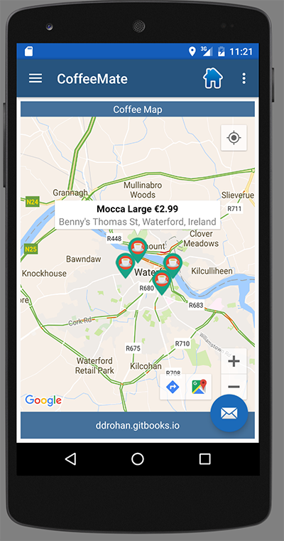
AddFragment
Now that we can see existing coffees on our Map, what about when we add new coffees on the device, not the web app? This is the final step in our Case Study and involves a bit of work in refactoring our AddFragment as we need to grab the current location to save with our coffee details.
And for fun :) we'll also embed our MapFragment inside the AddFragment layout, so we can see where we're adding our coffee, like so
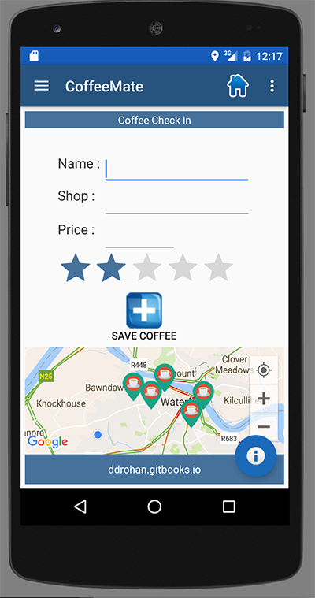
First thing to do is
. . .
. . . .
. . . .